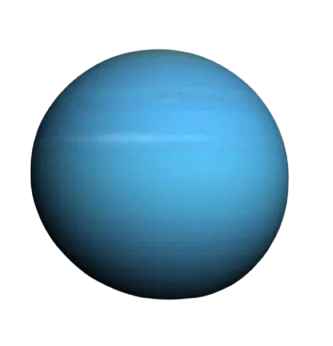

| PLANETA | DESCRIÇÃO |
|---|---|
|
 |
Urano é o sétimo planeta do Sistema Solar e um gigante gasoso com tons azul-esverdeados por causa do metano em sua atmosfera. Ele gira de lado, com o eixo de rotação quase na horizontal — único entre os planetas. Possui anéis finos e mais de 25 luas conhecidas. Sua atmosfera é muito fria, com temperaturas que chegam a -224°C. Foi o primeiro planeta descoberto com telescópio, em 1781. |